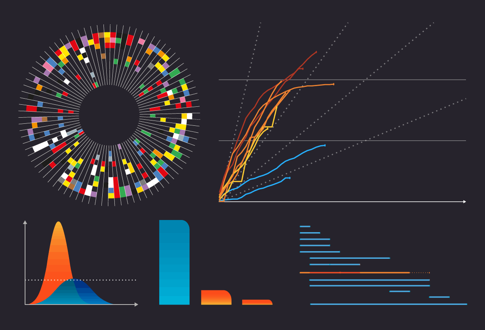

Visualisations that seems to solicit attention from both effectiveness and cosmetics inclined audiences....

Is information beautiful?.
In his work on the glass house effect Hirsch (2013) argue that Big Data is the new oil...
Data and ethics.
When thinking about the meta-ethical implications of technological devices, which generate data
streams, it is important to approach the issue from the point of view of the set of devices...
Visualizations and the audience
(Janiszewski, 1993) argues that” the first glance exposure to a brand name or product package can encourage a consumer to have a more favorable attitude toward the brand